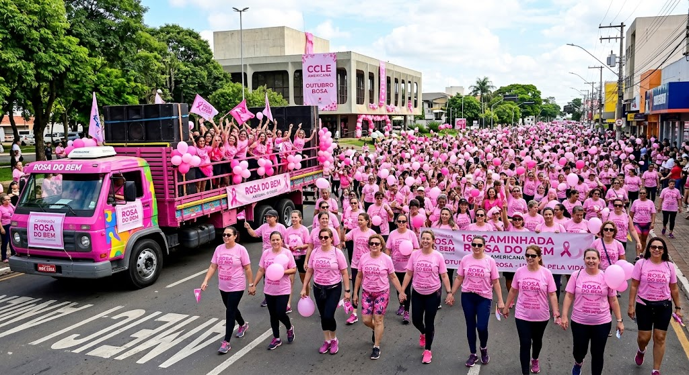
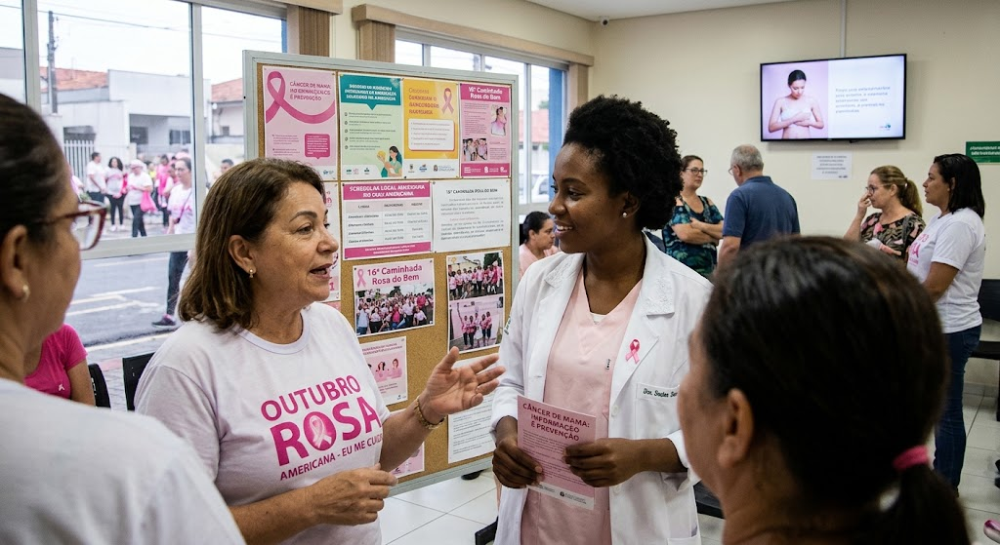
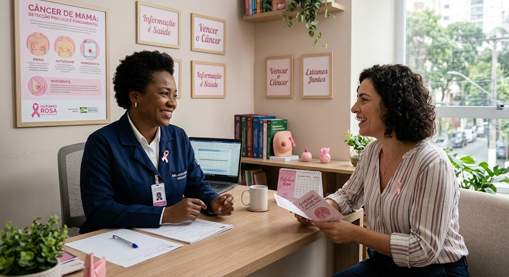
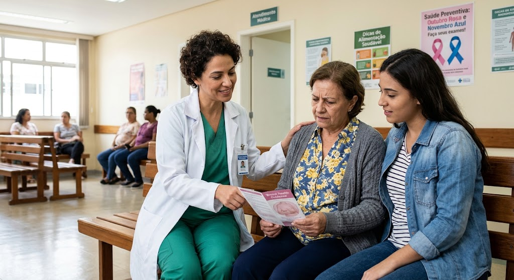
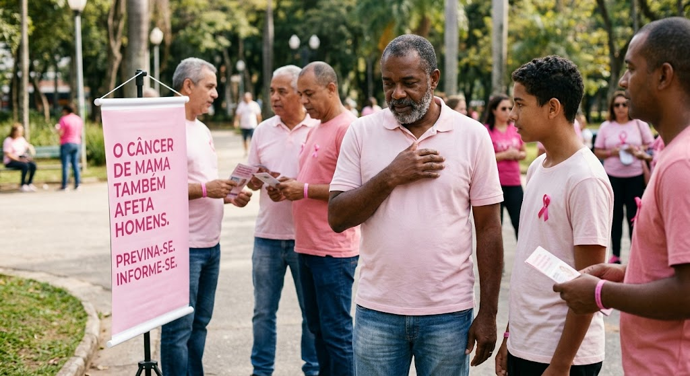

Levar informação à comunidade
Ações públicas ajudam a iniciar conversas sobre saúde das mamas e a divulgar onde buscar orientação confiável.
As caminhadas do Outubro Rosa reúnem pessoas em torno da conscientização sobre o câncer de mama. Em Americana, o vídeo apresentado nesta página registra a 16ª Caminhada Rosa do Bem.
Assistir ao vídeo
O vídeo incorporado abaixo tem o título “16ª Caminhada Rosa do Bem – POR AMOR À VIDA | Americana SP”. Ele registra uma edição da caminhada realizada em Americana e serve como memória visual da mobilização.
Iniciativas como essa ajudam a colocar a saúde das mamas em pauta, aproximar a comunidade e incentivar a busca por informações e atendimento profissional.

16ª Caminhada Rosa do Bem – POR AMOR À VIDA | Americana SP, 18/10/2026
A caminhada é uma oportunidade de demonstrar apoio e compartilhar informação. Ela não substitui consultas, exames ou orientações de profissionais de saúde.
Ações públicas ajudam a iniciar conversas sobre saúde das mamas e a divulgar onde buscar orientação confiável.
Participar pode ser uma forma de apoiar pessoas em tratamento, familiares, profissionais e grupos de acolhimento.
Se tiver dúvidas ou perceber uma alteração, procure uma unidade de saúde ou profissional. Cada situação precisa de avaliação individual.
Sempre procure aprender mais sobre o problema e como vencê-lo.



Fundado em 2011, o Instituto Rosa do Bem promove ações de prevenção e conscientização sobre o câncer de mama. Entre elas estão campanhas com exames gratuitos, caminhadas, palestras e eventos em Americana.
Visite o site oficial